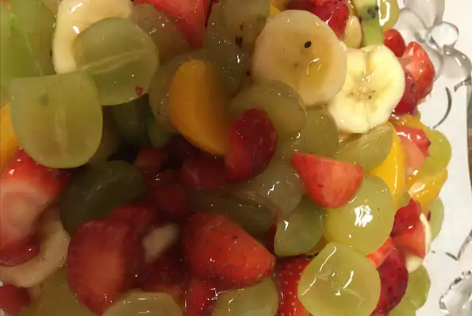

Fruit Salad

Description
The easiest fruit salad you are likely to make.
Ingredients
- 1 pint strawberries
- 1 pound seedless grapes, halved
- 3 kiwis, peeled and sliced
- 3 bananas, sliced
- 1 (21 ounce) can peach pie filling
Steps
- In a large bowl, combine the strawberries, grapes, kiwis, and bananas.
- Gently mix in peaches.
- Chill for 1 hour before serving.